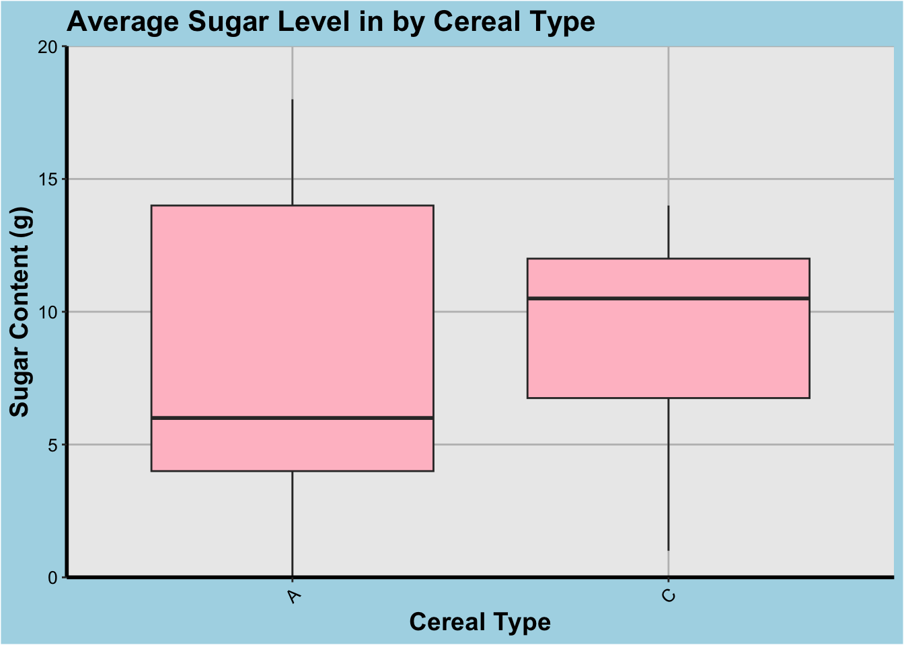
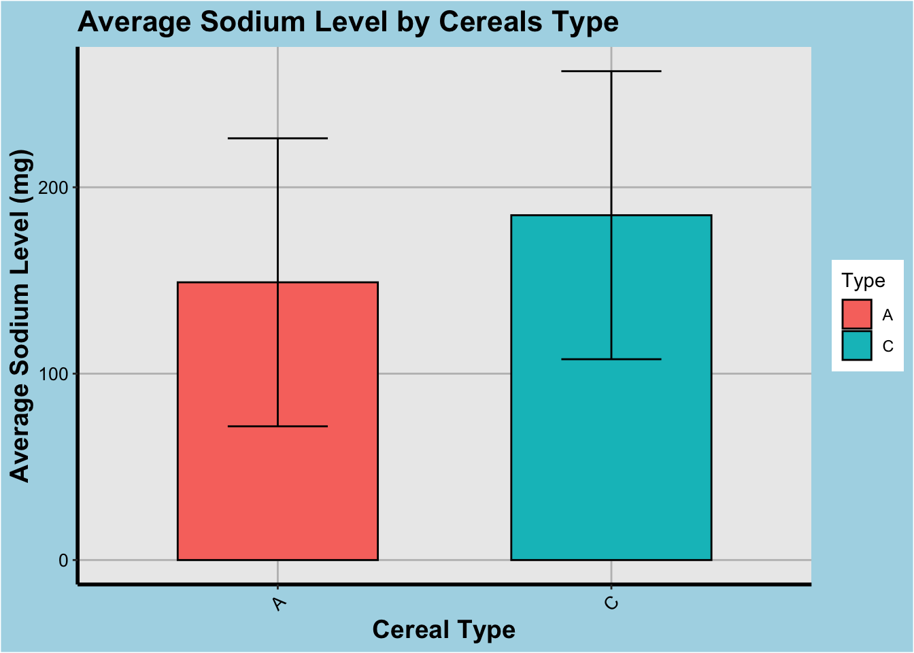
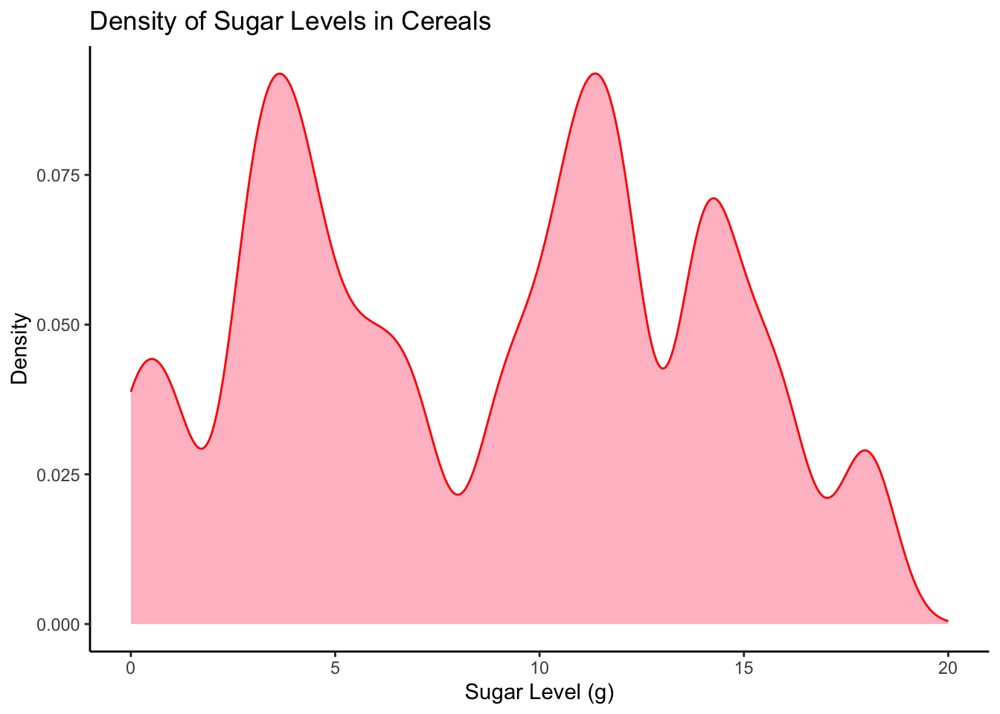
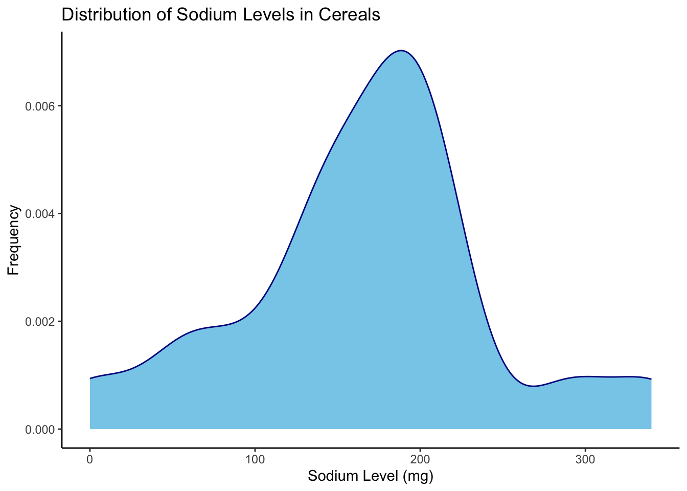
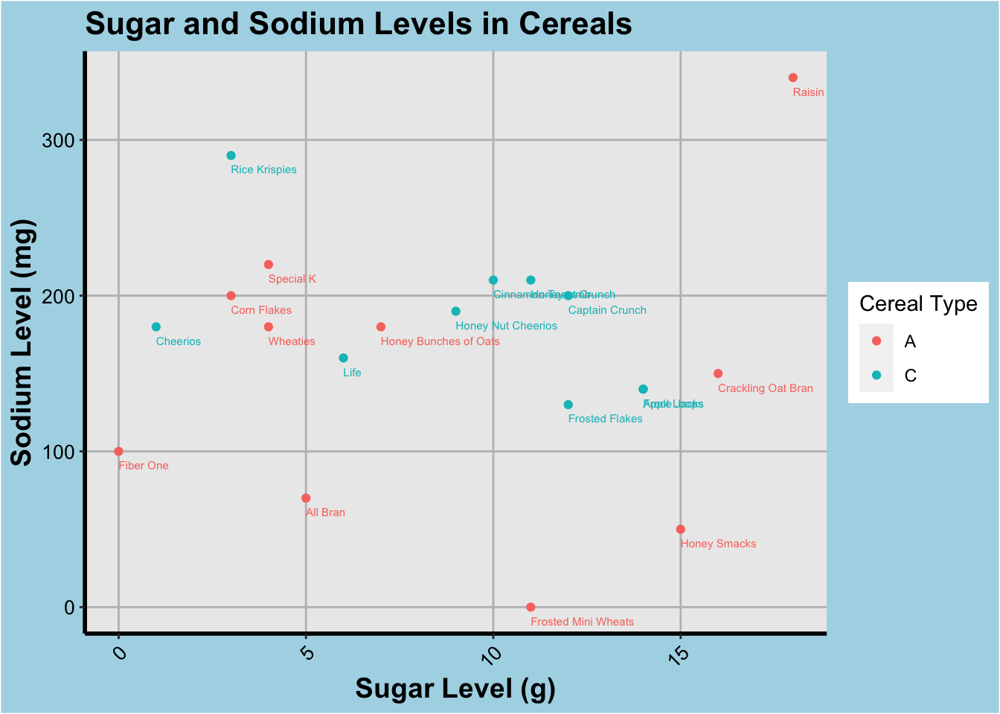

library(tidyverse)
library(ggplot2)
knitr::opts_chunk$set(echo = TRUE, warning=FALSE, message=FALSE)Challenge 5 Submission
challenge_5
railroads
cereal
air_bnb
pathogen_cost
australian_marriage
public_schools
usa_hh
Introduction to Visualization
Challenge Overview
Today’s challenge is to:
- read in a data set, and describe the data set using both words and any supporting information (e.g., tables, etc)
- tidy data (as needed, including sanity checks)
- mutate variables as needed (including sanity checks)
- create at least two univariate visualizations
- try to make them “publication” ready
- Explain why you choose the specific graph type
- Create at least one bivariate visualization
- try to make them “publication” ready
- Explain why you choose the specific graph type
R Graph Gallery is a good starting point for thinking about what information is conveyed in standard graph types, and includes example R code.
(be sure to only include the category tags for the data you use!)
Read in data
Read in one (or more) of the following datasets, using the correct R package and command.
- cereal ⭐
- pathogen cost ⭐
- Australian Marriage ⭐⭐
- AB_NYC_2019.csv ⭐⭐⭐
- railroads ⭐⭐⭐
- Public School Characteristics ⭐⭐⭐⭐
- USA Households ⭐⭐⭐⭐⭐
cereal <- read_csv("_data/cereal.csv")
head(cereal)Briefly describe the data
This dataset provides information about different brands of cereal, including their sodium and sugar content, and their type. The dataset has 4 variables:
Cereal: the name of the cereal brand. Sodium: the amount of sodium (in milligrams) per serving of the cereal. Sugar: the amount of sugar (in grams) per serving of the cereal. Type: the type of cereal, either “A” or “C”. This probably describes the intended consumer. A -> Adult and C -> Child.
str(cereal)spc_tbl_ [20 × 4] (S3: spec_tbl_df/tbl_df/tbl/data.frame)
$ Cereal: chr [1:20] "Frosted Mini Wheats" "Raisin Bran" "All Bran" "Apple Jacks" ...
$ Sodium: num [1:20] 0 340 70 140 200 180 210 150 100 130 ...
$ Sugar : num [1:20] 11 18 5 14 12 1 10 16 0 12 ...
$ Type : chr [1:20] "A" "A" "A" "C" ...
- attr(*, "spec")=
.. cols(
.. Cereal = col_character(),
.. Sodium = col_double(),
.. Sugar = col_double(),
.. Type = col_character()
.. )
- attr(*, "problems")=<externalptr> summary(cereal) Cereal Sodium Sugar Type
Length:20 Min. : 0.0 Min. : 0.00 Length:20
Class :character 1st Qu.:137.5 1st Qu.: 4.00 Class :character
Mode :character Median :180.0 Median : 9.50 Mode :character
Mean :167.0 Mean : 8.75
3rd Qu.:202.5 3rd Qu.:12.50
Max. :340.0 Max. :18.00 This summary shows the range, median, mean, and quartiles for both the sodium and sugar variables. It also shows that the two other variables in the tibble are character-type.
Tidy Data (as needed)
Is your data already tidy, or is there work to be done? Be sure to anticipate your end result to provide a sanity check, and document your work here.
The dataset looks pretty tidy from an initial investigation, but it’s always nice to check for missing values and duplicate rows as a rule of thumb.
# Check for missing values
sum(is.na(cereal))[1] 0# Check for duplicate rows
duplicate_rows <- cereal[duplicated(cereal),]
nrow(duplicate_rows)[1] 0Are there any variables that require mutation to be usable in your analysis stream? For example, do you need to calculate new values in order to graph them? Can string values be represented numerically? Do you need to turn any variables into factors and reorder for ease of graphics and visualization?
Document your work here.
As we described beofre, the “Type” variable likely describes if the intended consumer is an Adult or a Child. This is represented as a string (either “A” or “C”) and can be mutated into a factor variable for EDA purposes.
cereal$Type <- as.factor(cereal$Type)
cereal$Type <- factor(cereal$Type, levels = c("A", "C"))
head(cereal)Additionally, to visualize the distribution of sodium and sugar levels in each type of cereal, we create a new variable to indicate the mean sodium and sugar levels for each type.
cereal_mean <- cereal %>%
group_by(Type) %>%
summarize(mean_sodium = mean(Sodium), mean_sugar = mean(Sugar))
head(cereal_mean)Univariate Visualizations
Distribution of Sugar Content:
To visualize the distribution of sugar content in the cereal dataset, we will use a histogram plot. The histogram plot helps us to understand the distribution of a continuous variable by dividing it into bins and plotting the frequency of data points in each bin. This graph type is suitable for this analysis as it provides a quick understanding of the distribution of sugar content in the cereal dataset.
# Load ggplot2 library
library(ggplot2)
# Boxplot of sugar and sodium content by cereal type
ggplot(cereal, aes(x=Type, y=Sugar)) +
geom_boxplot(fill="pink") +
scale_y_continuous(limits=c(0, 20), expand=c(0,0),
breaks=seq(0, 20, 5)) +
labs(x="Cereal Type", y="Sugar Content (g)") +
ggtitle("Average Sugar Level in by Cereal Type") +
theme(
plot.background = element_rect(fill = "lightblue"),
panel.grid.major = element_line(color = "gray"),
panel.grid.minor = element_blank(),
axis.line.x = element_line(color = "black", size = 1),
axis.line.y = element_line(color = "black", size = 1),
axis.text.x = element_text(color = "black", size = 10, angle = 45, hjust = 1),
axis.text.y = element_text(color = "black", size = 10),
axis.title.x = element_text(color = "black", size = 14, face = "bold"),
axis.title.y = element_text(color = "black", size = 14, face = "bold"),
plot.title = element_text(color = "black", size = 16, face = "bold")
)
ggplot(cereal_mean, aes(x=Type, y=mean_sodium, fill=Type)) +
geom_bar(stat="identity", color="black", width=0.6) +
geom_errorbar(aes(ymin=mean_sodium-sd(cereal$Sodium), ymax=mean_sodium+sd(cereal$Sodium)),
width=0.3, color="black") +
labs(x="Cereal Type", y="Average Sodium Level (mg)") +
ggtitle("Average Sodium Level by Cereals Type") +
theme(
plot.background = element_rect(fill = "lightblue"),
panel.grid.major = element_line(color = "gray"),
panel.grid.minor = element_blank(),
axis.line.x = element_line(color = "black", size = 1),
axis.line.y = element_line(color = "black", size = 1),
axis.text.x = element_text(color = "black", size = 10, angle = 45, hjust = 1),
axis.text.y = element_text(color = "black", size = 10),
axis.title.x = element_text(color = "black", size = 14, face = "bold"),
axis.title.y = element_text(color = "black", size = 14, face = "bold"),
plot.title = element_text(color = "black", size = 16, face = "bold")
)
Frequency of Sugar and Sodium:
To visualize the frequency of cereal type in the cereal dataset, we will use a density plot. The desnity plot can be useful to understand the frequency of continuous data.
# Density plots of sugar and sodium content
ggplot(cereal, aes(x=Sugar)) +
geom_density(fill="pink", color="red", bw=0.7) +
labs(x="Sugar Level (g)", y="Density") +
ggtitle("Density of Sugar Levels in Cereals") +
theme_classic() +
xlim(0, 20)
ggplot(cereal, aes(x=Sodium)) +
geom_density(fill="skyblue", color="darkblue") +
labs(x="Sodium Level (mg)", y="Frequency") +
ggtitle("Distribution of Sodium Levels in Cereals") +
theme_classic()
Bivariate Visualization(s)
Scatter Plot of Sugar vs Sodium Content:
To visualize the relationship between sugar and sodium content in the cereal dataset, we will use a scatter plot. The scatter plot helps us to understand the relationship between two continuous variables by plotting the data points on a two-dimensional graph. This graph type is suitable for this analysis as it provides a quick understanding of the relationship between sugar and sodium content in the cereal dataset.
ggplot(cereal, aes(x=Sugar, y=Sodium, color=Type)) +
geom_point() +
geom_text(aes(label=Cereal),hjust=0, vjust=2.2, size=2) +
labs(x="Sugar Level (g)", y="Sodium Level (mg)") +
ggtitle("Sugar and Sodium Levels in Cereals") +
scale_color_discrete(name="Cereal Type") +
theme(
plot.background = element_rect(fill = "lightblue"),
panel.grid.major = element_line(color = "gray"),
panel.grid.minor = element_blank(),
axis.line.x = element_line(color = "black", size = 1),
axis.line.y = element_line(color = "black", size = 1),
axis.text.x = element_text(color = "black", size = 10, angle = 45, hjust = 1),
axis.text.y = element_text(color = "black", size = 10),
axis.title.x = element_text(color = "black", size = 14, face = "bold"),
axis.title.y = element_text(color = "black", size = 14, face = "bold"),
plot.title = element_text(color = "black", size = 16, face = "bold")
)
#+ scale_x_log10()+ scale_y_log10()Any additional comments?
As we can infer from this graph, there isn’t a strict relationship between the kinds of cereals marketed to Adults or Children in this dataset. Although, in general sugary ones are targeted towards a younger user group while the savory ones (high sodium content) are generally marketed to an older user group. The collection of scatter plot along the middle of the y-axis indicates the sodium levels are generally standardized and the sugar levels can vary by a lot, which seems accurate based on the density plot as well.